Funcións avanzadas de Parladoiro
Parladoiro de Nextcloud ten unha serie de funcións avanzadas que os usuarios poden atopar útiles.
Notifications and privacy
By default, Nextcloud Talk will notify you about:
New messages in private conversations;
Replies to messages you sent;
Messages mentioning you or group/team you are member of;
Started calls in conversations you are part of.
You can change this behavior in the conversation settings. Additionally, you can configure:
Important conversations: you will be always notified about new messages, even if you are in «Do Not Disturb» mode;
Sensitive conversations: content of messages will not be shown in the conversation list and obscured from notifications.

To have more control over your privacy, you can also configure the visibility of your typing and read indicators in Talk settings:
{kind=link}
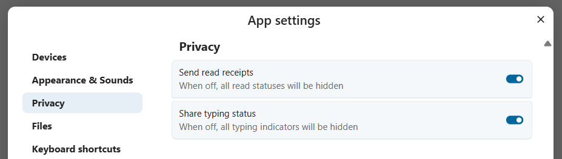
Matterbridge
A integración de Matterbridge en Parladoiro de Nextcloud fai posíbel crear «pontes» entre conversas de Parladoiro e conversas noutros servizos de parola como MS Teams, Discord, Matrix e outros. Pode atopar unha lista de protocolos admitidos na páxina en GitHub de Matterbridge.
Un moderador pode engadir unha conexión Matterbridge nos axustes das parolas de conversas.

Cada unha das pontes ten a súa propia necesidade no que atinxe a configuración. A información para a maioría está dispoñíbel na wiki de Matterbridge e pódese acceder a eta tras o menú máis información no menú .... Tamén pode acceder á wiki directamente.
Ástrago
A funcionalidade do ástrago permítelle amosar aos convidados unha pantalla de espera ata que comece a chamada. Isto é indicado, por exemplo, para seminarios web con participantes externos.
{kind=link}
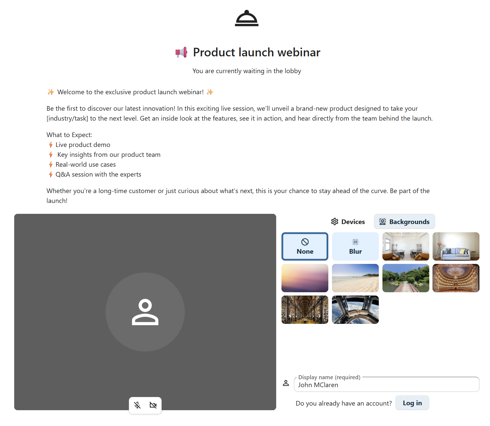
Pode optar por permitir que os participantes se unan á chamada a unha hora específica ou cando peche manualmente o ástrago.
Ordes
Nextcloud permite aos usuarios executar accións mediante ordes. Normalmente, unha orde adoita ter este aspecto:
/wiki avións
A administración da instancia pode configurar, activar e desactivar ordes. Os usuarios poden usar a orde help para descubrir que ordes están dispoñíbeis.
/help
{kind=link}
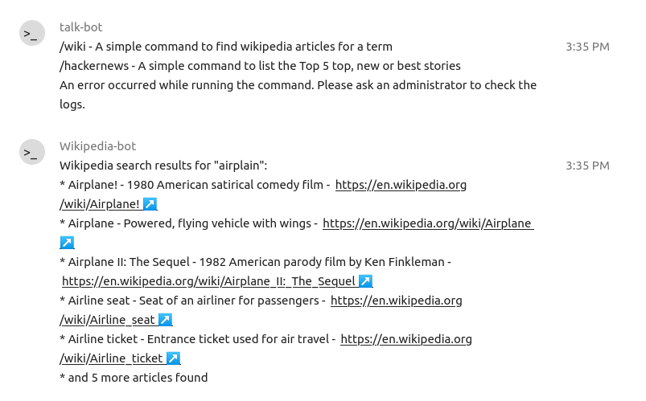
Atope máis información na documentación administrativa de Parladoiro.
Parladoiro desde Ficheiros
Na aplicación Ficheiros, pode parolar sobre os ficheiros na barra lateral e incluso facer unha chamada mentres os edita. Primeiro ten que unirse á parola.
{kind=link}
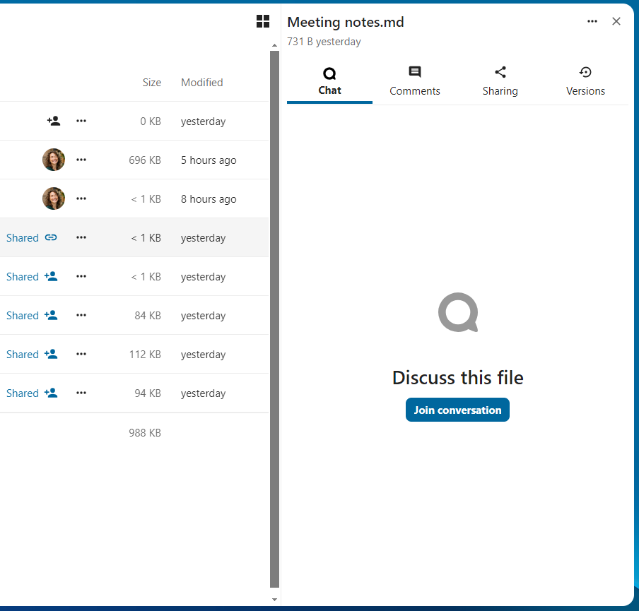
{kind=link}
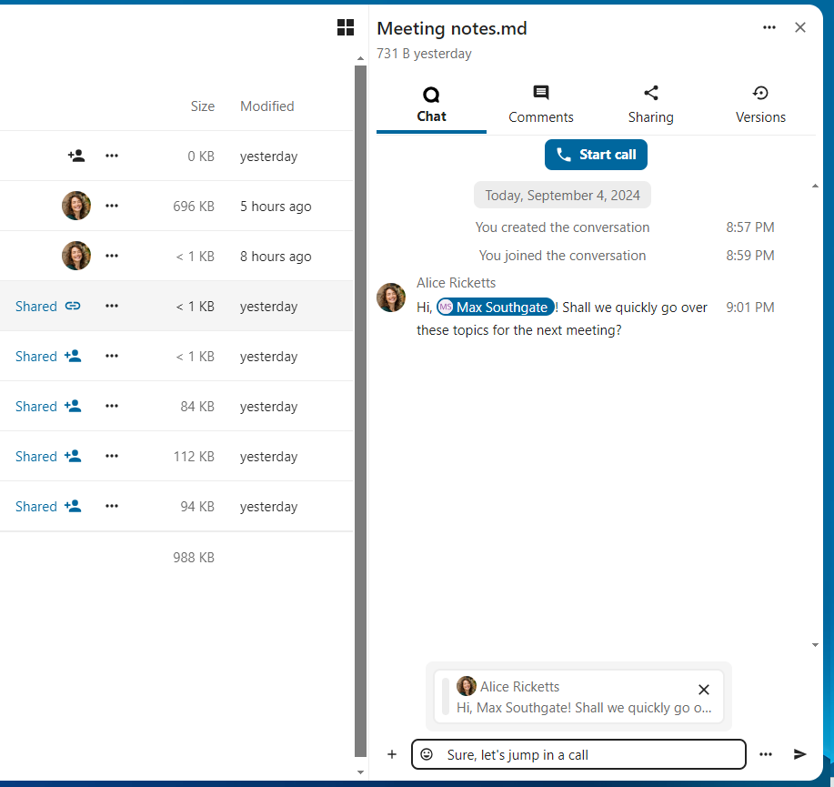
Após pode parolar ou facer unha chamada con outros participantes, mesmo cando comece a editar o ficheiro.

En Parladoiro, crearase unha conversa para o ficheiro. Pode parolar desde aí ou volver ao ficheiro usando o menú ... na parte superior dereita.

Crear tarefas desde a parola ou compartir as tarefas na parola
Se a Gabeta está instalada, pode usar o menú ... dunha mensaxe de parola e converter a mensaxe nunha tarefa na Gabeta.


Desde a Gabeta, pode compartir tarefas en parolas de conversas.


Meetings and events
If calendar events have a Talk conversation set as event location, you will see an information about upcoming events inside of this conversation. That way you can stay informed about scheduled meetings or activities directly within your chat. If Calendar app is enabled, you can click on an event to view details.
{kind=link}
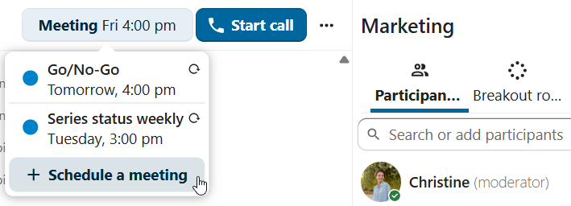
It is possible to schedule a meeting directly from a conversation. In the dialog, you can set meeting details such as title, date, time and description. You can also choose to invite all participants including email guests, or select specific ones.
{kind=link}
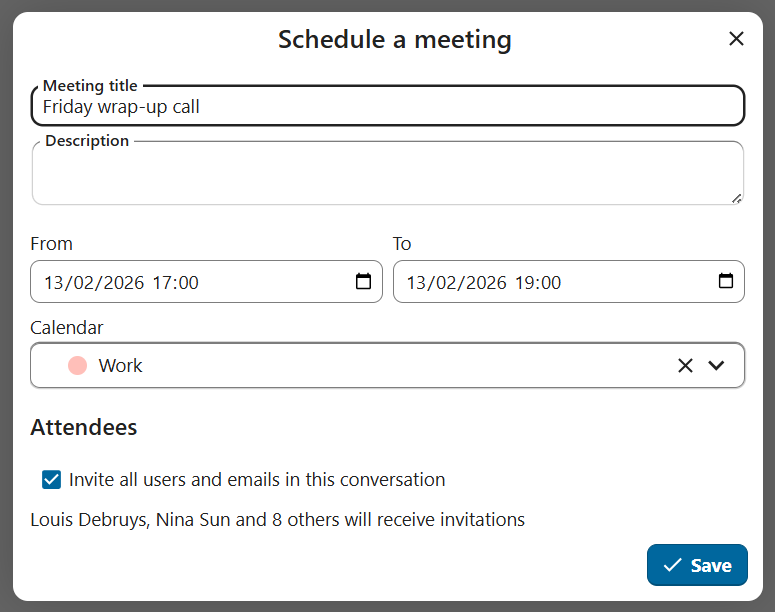
Schedule from Calendar
When creating a new event in Calendar, you can set a Talk conversation as event location. This will create a new conversation if one does not exist yet.
{kind=link}
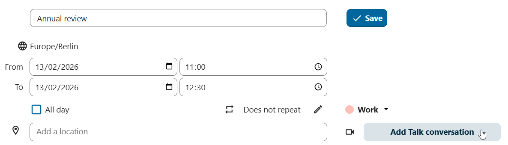
When the event is created, you will see a link to the conversation in the event details. Conversation will also show up in the list of conversations (discoverable by Events filter).
{kind=link}
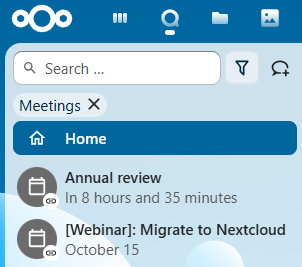
Like instant meetings, event conversations will be automatically deleted after configured period of inactivity (by default 28 days).
Salas parciais
As salas parciais permítenlle dividir unha chamada Parladoiro de Nextcloud en grupos máis pequenos para debates máis específicos. O moderador da chamada pode crear varias salas e asignar participantes a cada sala.
Nota
Actualmente non están dispoñíbeis as salas parciais en conversas ás que se unan convidados (conversas públicas).
Configurar as salas parciais
Para crear salas parciais, ten que ser moderador dunha conversa en grupo. Prema no menú da barra superior e prema en «Preparar as salas parciais».

Abrirase un diálogo onde pode especificar o número de salas que quere crear e o método de asignación dos participantes. Aquí presentaranse 3 opcións:
Asignar automaticamente os participantes: Parladoiro asignará automaticamente os participantes ás salas.
Asignar manualmente os participantes: pasará por un editor de participantes onde pode asignar participantes ás salas.
Allow participants to choose: Participants will be able to join breakout rooms themselves.

Xestionar as salas parciais
Unha vez creadas as salas parciais, poderá velas na barra lateral.

Desde a cabeceira da barra lateral
Iniciar e deter as salas parciais: isto moverá todos os usuarios da conversa principal ás súas respectivas salas parciais.
Difundir unha mensaxe a todas as salas: enviará unha mensaxe a todas as salas ao mesmo tempo.
Facer cambios nos participantes asignados: abrirase o editor de participantes onde poderá cambiar que participantes están asignados a que sala parcial. Desde este diálogo tamén é posíbel eliminar as salas parciais.

Desde o elemento da sala parcial da barra lateral, tamén pode unirse a unha sala parcial concreta ou enviar unha mensaxe a unha sala específica.

Gravación de chamadas
A funcionalidade de gravación fornece aos usuarios a oportunidade de:
Comezar e deter as gravacións durante a chamada.
Gravar o vídeo e o fluxo de son do altofalante, así como compartir a pantalla.
Acceder, compartir e descargar ficheiros gravados para futuras referencias ou distribución.
Para activar esta funcionalidade é necesario que o servidor de gravación estea definido pola administración do sistema.
Xestionar a gravación
O moderador da conversa pode comezar unha gravación xunto cun inicio de chamada ou en calquera momento durante unha chamada:
Antes da chamada: marque a caixa de selección «Comezar a gravar inmediatamente coa chamada» en «Axustes de multimedia», e, de seguido, prema en «Iniciar chamada».
Durante a chamada: prema no menú da barra superior e, de seguido, prema en «Comezar a gravar».
{kind=link}
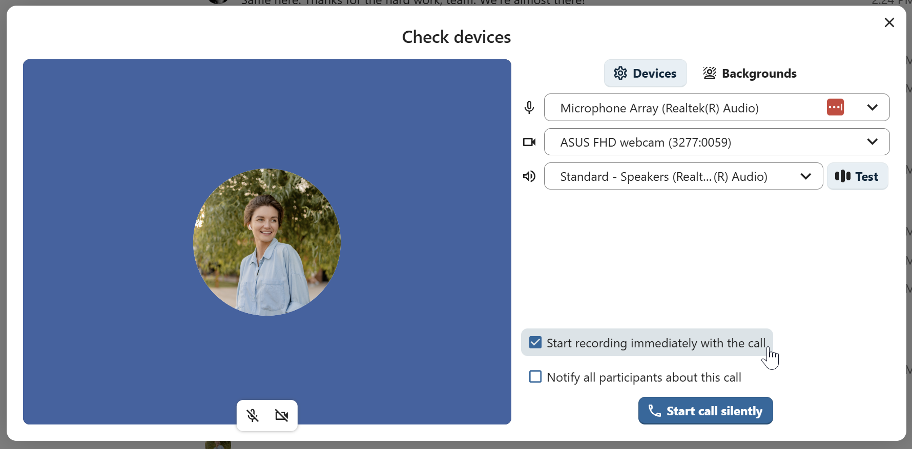
{kind=link}
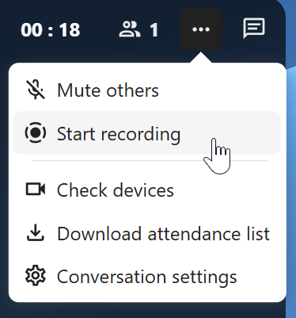
A gravación comezará en breve e verá un indicador vermello xunto á hora da chamada. Pode parar a gravación en calquera momento mentres a chamada segue en curso premendo nese indicador e seleccionando «Deter a gravación» ou empregando a mesma acción no menú da barra superior. Se non detén manualmente a gravación, rematará automaticamente cando remate a chamada.

Após deter unha gravación, o servidor tardará un tempo en preparar e gardar o ficheiro gravado. O moderador, que iniciou a gravación, recibe unha notificación cando se envía o ficheiro. A partir de aí, pode ser compartido na parola.


Consentimento de gravación
Por razóns de cumprimento de diversos dereitos de privacidade, é posíbel solicitar aos participantes o consentimento para ser gravado antes de incorporarse á chamada. A administración do sistema ten a flexibilidade de utilizar esta funcionalidade de varias maneiras:
Desactivar o consentimento por completo.
Activar o sistema de consentimento obrigatorio en todo o sistema, esixindo o consentimento para todas as conversas.
Permitirlle aos moderadores configurar esta opción a nivel de conversa. Nestes casos, os moderadores poden acceder aos axustes da conversa para configurar esta opción en consecuencia:

Se se activa o consentimento de gravación, todos os participantes, incluídos os moderadores, verán unha sección destacada en «Axustes de multimedia» antes de unirse a unha chamada. Esta sección informa aos participantes de que a chamada poderá ser gravada. Para dar o consentimento explícito para a gravación, os participantes deben marcar a caixa. Se non dan o seu consentimento, non se lles permitirá unirse á chamada.
{kind=link}
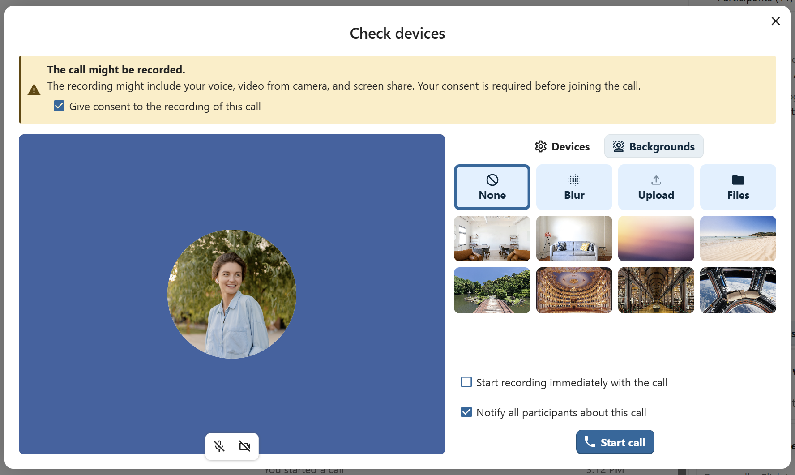
Conversa federada
Coa funcionalidade de Federación, os usuarios poden crear conversas en diferentes instancias de Parladoiro federadas e usar funcionalidade de Parladoiro coma se estivesen nun mesmo servidor.
A funcionalidade debe ser definida pola administración do sistema.
Enviar e aceptar convites
O moderador da conversa pode enviar un convite ao participante nun servidor diferente:

Ao recibir unha notificación, o usuario verá un contador de convites pendentes enriba da lista de conversas.

Ao premer nel, fornecese máis información sobre os convites, e o usuario pode aceptar ou rexeitar o convite.

Ao aceptar o convite, a conversa aparecerá na lista como calquera outra.

You can use it further to chat with participants from other federated servers, join calls and use other available Talk features.
Chat summary
When AI assistant is enabled, a summary can be generated if there are more than 100 unread messages. You can generate it by pressing the button that is visible in chat above the first unread messages.


Call live transcription
Call live transcription allows to transcribe the speech in real-time during a call. It is set up by the system administration (High-performance backend and Live Transcription App are required). Moderators need to set the language of the transcription in the conversation settings. All participants then can enable or disable the transcription for themselves in the call bottom bar. When enabled, the transcription will appear in the bottom and will be updated in real-time.

With live_transcription provider app enabled, you can also use live translation. Instead of receiving the transcription in the original message, it will be translated to the language of your choice.